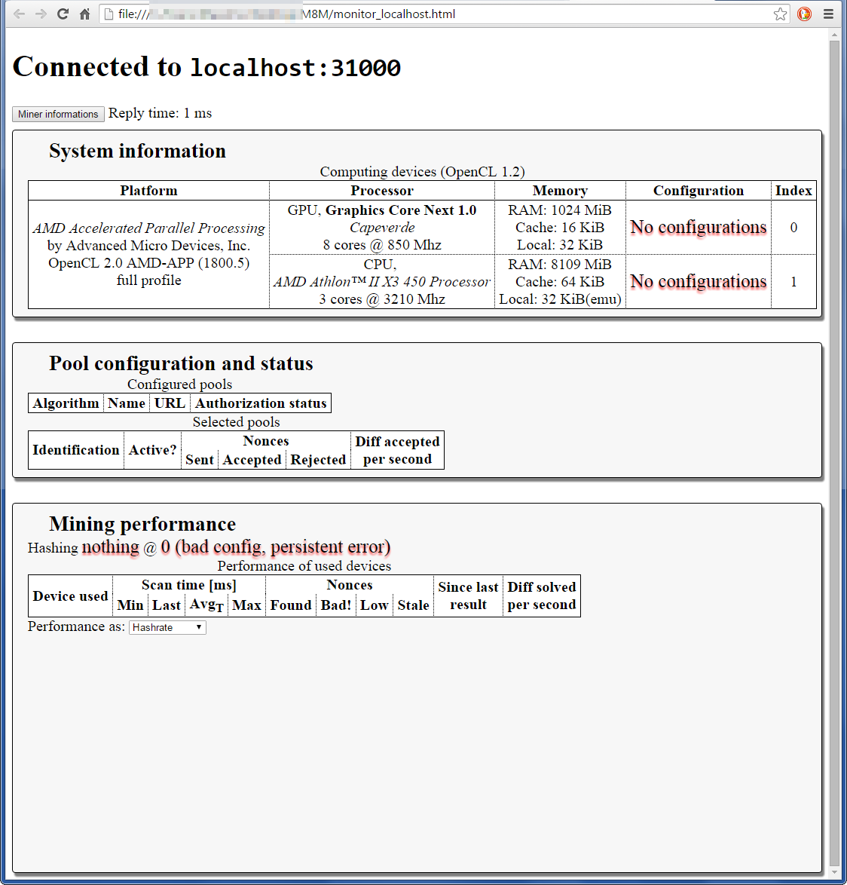

Web monitor
Is mining set up correctly? How many errors do I have?
Internet Explorer is not supported. The suggested browser is Mozilla Firefox.
To access the web monitor, right click on the icon and select "Enable web monitor". The icon will turn green. Try to leave M8M in this situation as little as possible.
Right click on the icon again and select "Connect to web monitor". Your browser will open. If everything is working fine, it will look like:

The first section holds informations about the system, the computing devices, whatever they are used or not. If a device is not used, the program will tell you why.
All devices, regardless being used or not, are identified by a unique index you can see on the right.
Each used device is mapped to a configuration (identified by a number between square brackets). To help you track the various devices, each used device is given a color as well.
This section is mostly useful for troubleshooting. If your card is not working, you'll find useful information there.
In the lower section, you can see the algorithm being hashed, as well as the aggregated hashrate from all devices. This is probably the number you really care about.
The following two lines should be pretty self-explicative, while the numbers in the tables might require some explanation.
In general, if you want to measure how much time it takes you to make something, you just take a stopwatch and measure the time taken to do the thing. This is the approach used in this table. You can revert to the more classical hashrate-oriented approach but I suggest to not do so.
Measuring hashrate has two issues: first, it produces big numbers depending on the amount of hashes computed per pass. This is not particularly important and we could get along with it.
Most importantly, measuring performance in terms of "how much times I can do this thing in a second" is a non-linear property. Consider a task like above, taking 62ms. This results in ~16.130 iterations per second.
Now, let's make this ~20% faster, let's say it takes 50ms. This would be 20 iterations per second. Note this is more than 16.130 + 20% (19.356). The division involved has somewhat "amplified" the difference.
Because of this reason, M8M uses the "correct" approach of measuring iteration times instead of hashrates by default.
Hashrate is still used for aggregated performance as hashrate can be added while iteration times cannot so you hopefully have both accurancy and easiness of use.
The columns regarding performance (scan time or hashrate) are as follows:
-
Last: time taken to execute the algorithm for the last produced result, including time required by data transfer.
This is the most reliable measurement of performance and will naturally fluctuate (sometimes even abruptly) depending on various factors.
- Averageshort: average time spent by all iterations between successive results.
- Average15: average time spent by all iterations in 15 minutes. This is currently not computed on the iterations but rather only on the iterations which found a result.
- Min and max are the best and worse performance ever measured (when using timings) or worse and best (when using hashrates).
Take averages with some salt. Neither is particularly reliable. Avgs cannot really be better than the best and it's still there mostly because I'm lazy. Avg15 can be better than the best because the way it's computed gets affected by luck.
The Nonces columns keep a count of "magic numbers" identified as potential solutions by the hashing process. The way it works is not currently very informative, albeit the numbers presented are accurate.
The first column is the number of good numbers produced by the computing device. After this number is indentified it is validated (in theory: validation is not currently implemented so the Bad! column is always 0). The column "stale" is the count of numbers which were discarded before being sent as the remote server sent a new work before we had a chance of sending our numbers. In theory, the miner will send good-stale magic numbers. In practice those counts can be slightly off.
The "details" buttons
Produce a floating box with seldom useful data.
The topmost gives information about how much time since the program started and since hashing started.
This can be two different values if you restart hashing or switch algo.
The button near aggregated hashrate is perhaps the most interesting.

You can drag those dialogs around if you want.
Differently from legacy miners, M8M allows different implementations of a single algorithm. Consider the algorithm as "the idea" while the implementation is the specific program making the idea work in practice.
The most important thing here is the version signature: it is a magic number hopefully identifying the specific instructions being run. This includes the algorithm, the implementation and even specific variations in the same version. It would be a good idea to include this in benchmarks.

The connection details are usually not very interesting. You will likely want to check this if you get a lot of rejects just to make sure connection details are fine.
There are plans to expand this functionality in the future but for the time being, that's it.
The "details" button included in the table will pour out information about the OpenCL resources used for computing. This is a part of the used memory. There are different types of memory and different ways to use it. This is mostly for the people who wants to get their hands dirty.
The only interesting thing for the others is to note how memory resources can be different (or not!) depending on what's being computed. Compare resources used by qubit, grøestl-myriad, fresh.
Troubleshooting with the web monitor
If you cannot connect to the web monitor first check out your antivirus. One particular vendor is known to be incredibly stupid in blocking connections with no notifications.
If this still does not work, or monitor is unstable try to contact the author because this should not be happening.
Missing or corrupted configuration file

You will get plenty of flashing red errors. Yes, I know this looks ugly on Chrome.
This is a relatively safe situation: your PC is doing nothing, including not wasting electricity.
The configuration wizard can help you identify the problem in this case but odds are you'll have to delete your configuration file.
Bad worker password

This is a relatively dangerous situation as you're wasting electricity for no benefit.
You'd expect M8M to signal this but for a reason or the other, it doesn't (as of 0.0.520). It does not even spend so much effort in letting you know.
This will probably be improved in the future but for the time being that's it.
I cannot even get to the monitor...
... something regarding "getaddr failed"
This is a known issue. Most of the time this happens because you have a '/' at the end of your server URL.
It has not been fixed in a long time and made it to alpha. It is another thing which will have to be improved in the future.
... failed send, socket reset

What happens: plenty of possible things. If this happens at startup, odds are you specified a wrong port for connection, some protocol violation happened and caused the server to kick you away.
It is a good idea to file a bug report or at least let someone know.
This can also happen every once in a while. It is known antivirus software has a part in it, but there are likely other causes as well.
As of 0.0.520, it is being investigated.
{kind=link}
{kind=link}
{kind=link}